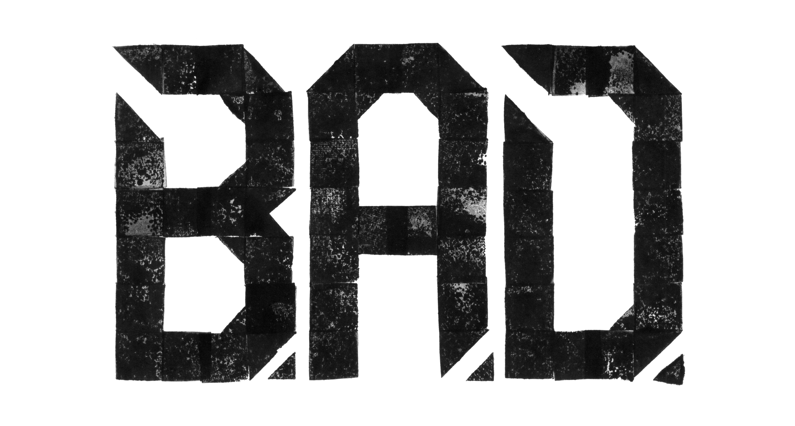
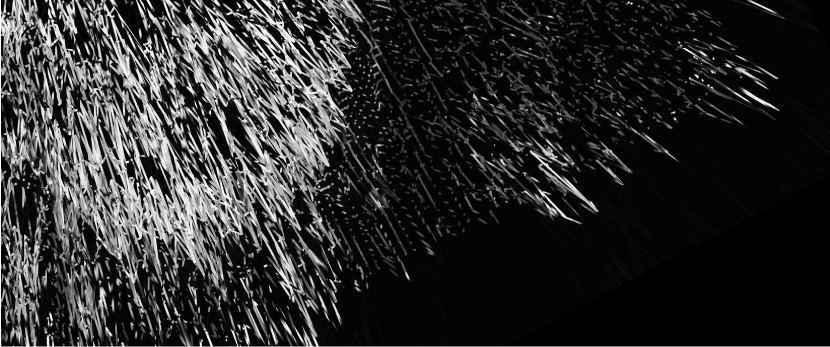

STAY UP TO DATE WITH THE LATEST PROJECTS FROM THE ARTY PARTY OF THE BLOCKCHAINZZZ
Get a sneak peek of B.A.D's four recent entries right below
or explore {{totalNumberOfEntries}} different crypto projects on the B.A.D core page.
{{cards[cards.length - 1].nameofthesubmitteditem}}
{{cards[cards.length - 1].thesubmitteditemis}}
{{cards[cards.length - 2].nameofthesubmitteditem}}
{{cards[cards.length - 2].thesubmitteditemis}}
{{cards[cards.length - 3].nameofthesubmitteditem}}
{{cards[cards.length - 3].thesubmitteditemis}}
{{cards[cards.length - 4].nameofthesubmitteditem}}
{{cards[cards.length - 4].thesubmitteditemis}}
LISTED: BLOCKCHAINART GALLERIES ON CRYPTOVOXELS.COM
Have a look at our list of blockchainart galleries!
The recent raise of galleries on the 3D blockchain platform Cryptovoxels lead us to a quick gathering of links to these unique collections and creative presentations of outstanding digital art. This is the according tweet calling for links.
If you want to have your gallery listed here simply reply to the tweet pointing to your gallery.
LISTED: RESULTS OF B.A.D's RECENT SURVEY
First results of the B.A.D survey "Who, where, what and why #blockchainart, #cryptocollectibles and #nft" available now!
At the beginning of April, we drafted a survey addressing blockchainart and cryptocollectibles artists, collectors, gallery owners and programmers, and asked them: Why are you active in the field? Which platforms do you use? How are you producing your artworks? How much profit do you make? And we wanted to learn about their ideas on NFT, education and value. The answers are available now. Unfiltered, uncommented.
UPCOMING BLOCKCHAINART EVENTS
Have a look at some of the upcoming events right below or check the archive for past activities. And always remember: Be rare or be square.
#RAREAF2
The Rare Art Festival

The original. One-day conference in Brooklyn about all things rare, nfty, dank and oterhwise unique. Open to artists, programmers, collectors, unicorns, and other rare people.
#IDAF2019
International Digital Art Festival
Two days with talks, discussion pannels, live NFT auction, screenings and more than 100 digital artworks.
B.A.D FEAT. RAREAF2
We keep you posted with the latest RareAF2 info and news
The Rare Art Festival will experience it's second edition on May 18th, 2019. People from all over the world meet for this 1-day-gathering at the Bushwick Generator – 215 Moore Street Brooklyn, NY to exchange about the latest developments in the world of blockchainart and cryptocollectibles. There will be several opportunities for artists, developers, collectors and other rare people to actively participate in RareAF2. The organizers would like to point you to the following websites for further information and occasions to be part of this one-of-a-kind event.
Check this line-up
Tickets
RareAF2 . NYC Blockchain Week After Party
Join the discussion and keep yourself posted with the latest news
Event website . Twitter . Telegram
Sorry, but it's time to cry - 'cause you missed the
Call for contributions . Call for Papers . Call for the Art Show
aaand the call for RareAF Design Contest.
Yes, life is hard.
ONBOARDING:
GETTING STARTED AS BLOCKCHAINART COLLECTOR OR ARTIST
Get familiar with essentials for becoming a blockchainart and cryptocollectibles artist or collector
We compiled a list which contains links to tutorials about how to get started with using the blockchain, dapps and other tools and features relevant for producing, collecting and viewing blockchainart and cryptocollectibles.
ONBOARDING:
BLOCKCHAINART & CRYPTOCOLLECTIBLES PLATFORMS & MARKET PLACES
Learn about the places where digital art is tokenized, sold, traded and exhibited - backed by blockchain technology
You intend to sell your artworks on a blockchain backed marketplace, or you want to start a private collection of NFTs - but don't have any idea where to start? We collected some information and are happy to share them with you in order to help getting you aboard the blockchainart space ship.